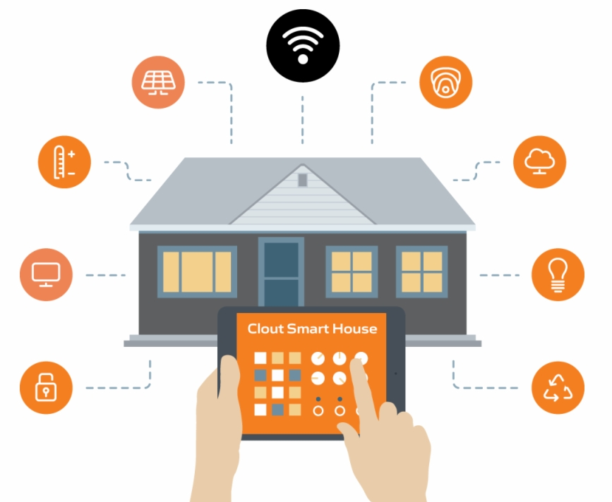

PROYECTO DE DOMÓTICA Y AUTOMATIZACIÓN

Hoy en día es bastante común ver que los objetos tecnológicos se han convertido en materiales indispensables para la vida cotidiana, y es que este avance tiene como objetivo principal facilitar la vida del ser humano para ahorrarle tiempo en actividades a veces irrelevantes. Desde hace varios años se ha oído hablar del termino Domótica, para ser más exactos los primeros estudios que se hicieron fueron en 1984 cuando se usó en un proyecto llamado SAVE el termino de domótica por primera vez, pero en los últimos años se ha llegado a la conclusión que para que una casa o edifico sea Demótico tiene que tener un sistema digital totalmente automatizado e interactivo, “Hace falta más que un sistema de iluminación inteligente, para decir que una casa está domotizada”. En los últimos años esta técnica de instalar casas inteligentes se ha popularizado y actualmente existen bastantes proyectos que tienen el fin de ofrecer sistemas, compuestos de software y Hardware, y al que se aplica una IA, en forma de asistente personal de voz, como lo son El asistente de voz de google, siri, Alexa, entre otros o diferentes software compactos para manejar todo desde una tableta o desde el teléfono móvil, los cuales serían el cerebro de la casa y se encargarían de interactuar con el usuario recibiendo las ordenes y ejecutando la tarea deseada.
Actualmente existe una empresa llamada Loxone creada en 2009, y la cual se encarga de revolucionar el mercado de las casas inteligentes, siendo actualmente una de las empresas líderes en la industria de esta tecnología, esta empresa se encuentra en Kollerschlag, Austria, cabe aclarar que se han internacionalizado y ya tienen sedes en Francia, Estados unidos, Reino Unido, entre otros.
Esta empresa ofrece la domotizacion de casas residenciales, como de edificios, donde el personal se encarga de la automatización de los diferentes espacios existentes para darle al cliente la tranquilidad de disfrutar de los servicios de su Smart Home sin tener que preocuparse por la instalación. De igual modo venden sus productos por separado para aquellas personas que prefieran o deseen domotizar su casa ellos mismos poco a poco o parcialmente, en el apartado de productos podemos encontrar:
• Los Miniserver que funcionan como el cerebro y quien se comunica con las diferentes funcionalidades: Iluminación, Climatización, Persianas, Pulsadores…
• Productos para integrar persianas enrollables, venecianas, cortinas, toldos, pérgolas… lo que el proyecto requiera.
• Bombillas LED que proporcionan luz impresionante y de alta calidad. Reguladores y diferentes protocolos de comunicación para integrar las fuentes de luz al sistema de control, permitiendo la creación de ambientes únicos.
• En la parte de seguridad tenemos sirena, alarma, detector de humo, control de acceso, entre otros elementos ofrecen la máxima protección.
• Automatización de los sistemas de climatización permiten garantizar la temperatura, la humedad y la calidad del aire ideal en cada espacio durante todo el día.
• La solución multimedia también está integrada completamente al proyecto, permitiendo el control de una gran variedad de dispositivos, desde televisores al sistema multiroom audio.
• Contadores de energía, comunicación con inversores, cargadores de coche eléctrico, enchufes inteligentes… productos y soluciones para la eficiencia y ahorro energético.
• Sensores de temperatura y humedad para el exterior, actuadores válvula para la piscina, automatización de los cuidados del jardín.
• Un control de accesos inteligente y adaptado según necesidades: vídeo portero con conexión remota, teclado numérico NFC, llaves NFC encriptadas y mucho más.
• Además incluye un Potente sistema operativo Loxone OS y software de configuración Loxone Config. Una App para todo y para todos, y servicios online que amplían aún más las posibilidades de la solución.
Hoy en día Loxone ha automatizado más de 100.000 casas a nivel mundial y ha vendido muchísimos ejemplarejes de sus productos, como podemos concluir este proyecto está bastante completo y totalmente pensado para ahorrarnos tiempo y generar una facilidad a la hora de interactuar con nuestra casa, es necesario ir automatizando los ambientes para adaptarnos al avance tecnológico y acercarnos un poco más al futuro.